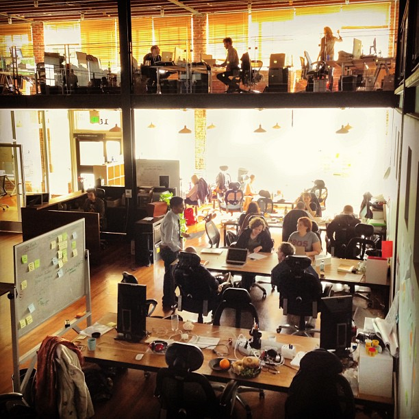

    <div class="out contrast">
      <div class="in">
        <div class="a">
            <div class="section">
              <h2>LocalData is looking for a Sales and Business Development Lead</h2>

              <p>LocalData is a civic startup dedicated to democratizing geospatial data collection and analysis through easy-to-use web-based tools.  We believe better data makes better cities, and we are helping to build a world where citizens and institutions use data to make informed and inclusive decisions.  Our customers tackle problems from blight and vacancy to crime, economic development. and housing preservation. LocalData is an online mapping platform providing mobile tools to assist governments, nonprofits, and universities collect and understand place-based data.</p>

              <p>We’re looking for the next member of our team to grow sales and reach new customers globally.</p>
            </div>

            <div class="section">
              <h2>What you'll do</h2>

              <ul>
                <li>Drive the full sales cycle from lead to close</li>
                <li>Design lead generation process</li>
                <li>Collaborate on marketing strategy</li>
                <li>Enterprise sales to governments, nonprofits, universities, and others</li>
                <li>Research, prioritize, and contact a broad set of potential customers, including government, nonprofits, NGOs, and businesses</li>
                <li>Meet with civic leaders and introduce LocalData at client and industry events across the US</li>
                <li>Work directly with the product team to improve our core toolkit and develop new products based on client needs</li>
              </ul>
            </div>

            <div class="section">
              <h2>Your experience &amp; skills</h2>

              <ul>
                <li>2-5 years of experience in sales</li>
                <li>Comfort with a wide variety of hats, from lead generation to responding to RFPs and managing accounts </li>
                <li>Experience with governments, nonprofits, and academic institutions is a huge plus</li>
                <li>Excellent communication skills (writing and speaking)</li>
                <li>Comfort articulating technical concepts in simple terms</li>
              </ul>
            </div>


            <div class="section">
              <h2>To apply</h2>
              <p>We're an early stage startup, so while your primary job is to sell, you should be excited about wearing other hats. Base salary commensurate to experience, competitive commissions, health insurance, and all the snacks you can eat.</p>

              <p>This position is located in our San Francisco headquarters in Code for America’s amazing space. We encourage applicants of any gender identity or expression, race, ethnicity, age, size, sexual orientation, religion and identity.</p>

              <p>To apply, email a resume and letter of interest to <a href="mailto:info@localdata.com">info@localdata.com</a>.</p>
            </div>
        </div>

        <div class="b">
          
          <p><em>The sunlit LocalData + Code for America Office in San Francisco. Photo from <a href="https://www.flickr.com/photos/codeforamerica/8663998396/">Noel Hildago</a></em>.</p>
        </div>
      </div>
    </div>
